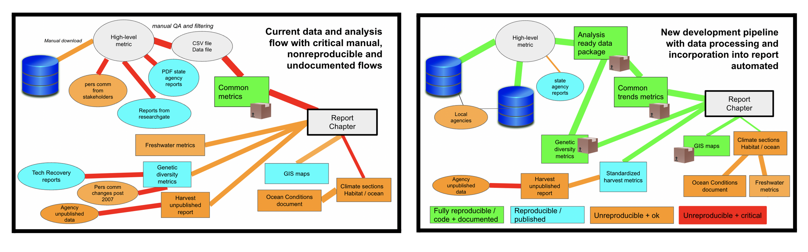
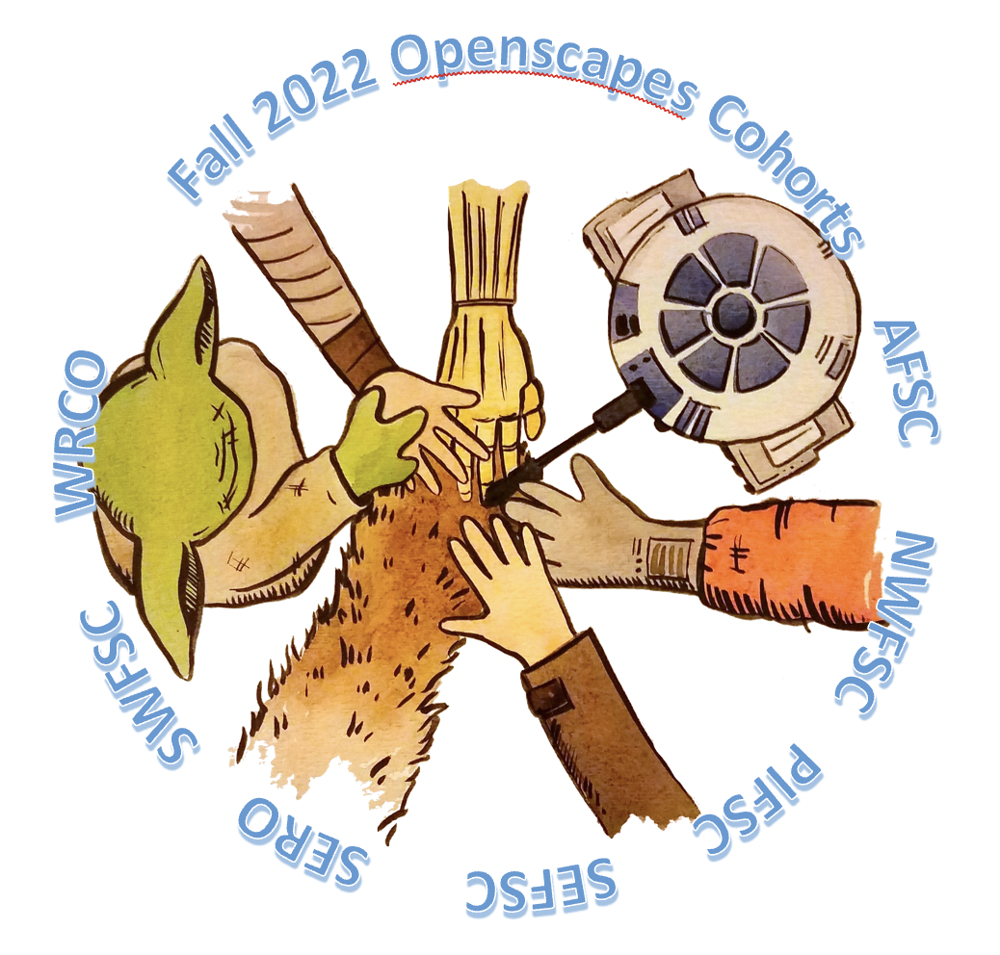

NMFS Champions Cohorts
Champions Cohorts
NMFS Openscapes Champions program is a mentorship and professional development opportunity for individuals and research teams in NOAA Fisheries. Read blog posts about each NMFS Champions Cohort and other NMFS Openscapes activities.
Example workflow analysis

Example workflow analysis by one of the Fall 2022 NMFS Openscapes teams: left) current workflow and right) new workflow. See right figure for color legend. The red lines (left) were critical workflows of data or analyses that the team identified as the key targets for improving their workflow. These red workflows could be automated (coded) but were currently done manually, requiring high staff time and introducing errors due to the number steps involved. In addition, the team identified that all elements of the report were being assembled manually and this was inefficient and introduced unexplained differences between chapters. Workflows analysis is a key component of the Openscapes Champions program. Visualizing workflows and discussing problem areas allows teams to identify the critical problem areas and where to target improvements.
Upcoming Cohorts
We will lead 3 more Champions Cohorts in Fall 2025.

Past Cohorts
2024
Fall: 3 Fall NMFS Openscapes Champions Cohorts were held concurrently during Oct-Dec 2024, with participation of 120 staff and affiliates from a dozen centers, offices, and strategic initiatives (Cohorts website). Their work is featured by NOAA Fisheries: Open Science Momentum at NOAA Fisheries.
2023
Fall: We had a NMFS Openscapes Mentors Cohort in Oct-Dec 2023. Besides getting to know many new Open Science early adopters across NMFS, we wrote a paper Shifting institutional culture to develop climate solutions with Open Science published in Ecology and Evolution. A small group of mentors later participated in the NASA Spring 2024 Champions cohort and got to know the NASA Openscapes mentors. Another group of NMFS Openscapes mentors gave a workshop on cloud-native data access at the EDMW 2024: Introduction to using earth data in the cloud for scientific workflows.
2022
Fall: 4 Fall NMFS Champions Cohorts were held concurrently during Oct-Dec 2022, at AFSC, NWFSC, SWFSC, and SEFSC with participation by PIFSC, NEFSC, OST, and WCRO staff.
Blog posts and presentations from the fall cohort:
 IMPACTS OF OPENSCAPES TRAINING ON OPEN SCIENCE MOVEMENT BUILDING INSIDE NOAA’S ALASKA FISHERIES SCIENCE CENTER - February 16, 2023: EMILY MARKOWITZ, MARGARET SIPLE, JOSH LONDON
IMPACTS OF OPENSCAPES TRAINING ON OPEN SCIENCE MOVEMENT BUILDING INSIDE NOAA’S ALASKA FISHERIES SCIENCE CENTER - February 16, 2023: EMILY MARKOWITZ, MARGARET SIPLE, JOSH LONDON
 NATIONWIDE OPENSCAPES TRAINING AT NOAA FISHERIES SCIENCE CENTERS: FACILITATING COLLABORATION, SKILL-SHARING, AND OPEN SCIENCE - January 24, 2023: MOLLY STEVENS, ADYAN RIOS, AMANDA BRADFORD, KEVIN STIERHOFF, JULIETTE VERSTAEN, ELI HOLMES, EMILY MARKOWITZ, MARGARET SIPLE, JOSH LONDON, AND 150 NOAA FISHERIES OPENSCAPES CHAMPIONS
NATIONWIDE OPENSCAPES TRAINING AT NOAA FISHERIES SCIENCE CENTERS: FACILITATING COLLABORATION, SKILL-SHARING, AND OPEN SCIENCE - January 24, 2023: MOLLY STEVENS, ADYAN RIOS, AMANDA BRADFORD, KEVIN STIERHOFF, JULIETTE VERSTAEN, ELI HOLMES, EMILY MARKOWITZ, MARGARET SIPLE, JOSH LONDON, AND 150 NOAA FISHERIES OPENSCAPES CHAMPIONS
 Sound Bytes: Championing Open Science - December 7, 2022: Burger. (cross-posted at Openscapes.org)
Sound Bytes: Championing Open Science - December 7, 2022: Burger. (cross-posted at Openscapes.org)
Fall cohort pages: AFSC Fall 2022, NWFSC Fall 2022, SWFSC-PIFSC Fall 2022, SEFSC Fall 2022
Summer: SEFSC organized a Champions Cohort for 40+ scientists at the Southeast Fisheries Science Center. Summer 2022 SEFSC Cohort page
Blog post from the SEFSC summer cohort
 Aligning mission around collaborative practices, with researchers, supervisors, and IT - September 30, 2022: Rios, Stevens, Rule.
Aligning mission around collaborative practices, with researchers, supervisors, and IT - September 30, 2022: Rios, Stevens, Rule.
2021
Blog posts from the 2021 cohorts
 AFSC Winter Cohort Report - April 7, 2022: Markowitz, London, Siple.
AFSC Winter Cohort Report - April 7, 2022: Markowitz, London, Siple.
 Identifying common approaches and needs for fisheries dependent data - November 12, 2021: Fay, Jones, Holder and Lowndes
Identifying common approaches and needs for fisheries dependent data - November 12, 2021: Fay, Jones, Holder and Lowndes
 Strengthening scientific workflow and team collaboration at NOAA Fisheries - November 12, 2021: Holmes, Ward, Scalliet, Clatterbuck and Lowndes
Strengthening scientific workflow and team collaboration at NOAA Fisheries - November 12, 2021: Holmes, Ward, Scalliet, Clatterbuck and Lowndes
NWFSC Spring 2021 Champions Cohort of 30+ scientists at the Northwest Fisheries Science Center.
FDD Fall 2021 This was a Champions Cohort for Fisheries Dependent Data users (FDD).
NMFS Fall 2021 This was a Champions Cohort of scientists across 4 science centers: AFSC, NWFSC, NEFSC and SEFSC.
AFSC Winter 2021-2022 Champions Cohort at the Alaska Fisheries Science Center.